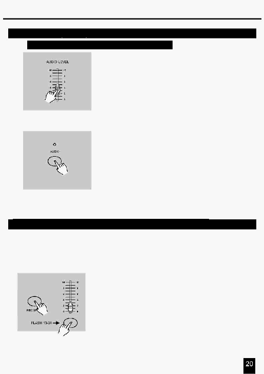

2.
Опис інструкцій
4.
Використайте повзунок Audio Level для установки рівня
спрацьовування.
5. Для повернення в нормальний режим роботи, натисніть
кнопку Audio другий раз, у цьому випадку її індикатор
згасне, що свідчить про скасування режиму Audio.
2.3.3 Запуск Програми з повзунка швидкості (Speed)
1.
Переконайтеся, що режим Audio вимкнений й індикатор
Audio не світиться.
2. Виберіть Програму як описано вище.
3.
Перемістіть повзунок Speed (Швидкості) у положення SHOW
MODE (СПОСОБУ ПОКАЗУ) (нижнє положення), потім
натисніть кнопку Flash (25-48), попередньо натиснувши й
утримуючи кнопку Rec Speed, що відповідає програмі яка
буде запускатися по стандартному ударі.
2.3.2 Запуск Програми від Аудіо входу